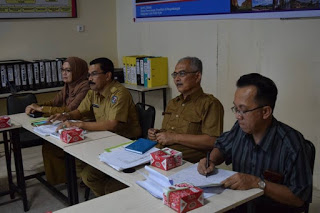

Strategi

- Persiapan Penyusunan Rencana Aksi Daerah Pengembangan Kawasan Lembah Harau :
- Pemetaan Masalah
- Penelahaan Regulasi
- Pembentukan Tim Efektif
- Review terhadap Dokumen Rencana Induk Pembangunan Kepariwisataan Kabupaten Lima Puluh Kota Tahun 2016-2032
- Penyusunan Sinergitas Rencana Aksi Daerah (RAD) Pengembangan Kawasan Lembah Harau :
- Penyusunan Dokumen RAD
- Dokumen RAD
- Penyusunan Draft SK Bupati Lima Puluh Kota tentang RAD Lembah Harau Mendunia Tahun 2017-2021
- Penetapan SK Bupati tentang Rencana Aksi Daerah Lembah Harau Mendunia Tahun 2017-2021
- Penyusunan Regulasi Tim Sinergitas:
- Penyusunan Draft SK Bupati Lima Puluh Kota tentang Tim Sinergitas Rencana Aksi Daerah Lembah Harau Mendunia Tahun 2017-2021
- Penetapan SK Bupati Lima Puluh Kota tentang Tim Sinergitas Rencana Aksi Daerah Lembah Harau Mendunia Tahun 2017-2021
- Membangun komitmen bersama stakeholders
- FGD Rencana Aksi Daerah
- Konsultasi Publik dan Deklarasi Stakeholders
- Dukungan dari Pemerintah Pusat
- Dukungan dari Pemerintah Provinsi
- Dukungan dari DPRD
- Dukungan dari Nagari/Desa
- Penyusunan Perencanaan dan Penganggaran untuk pendukungan Sinergitas RAD Lembah Harau Mendunia
- Sosialisasi Sinergitas RAD Lembah Harau Mendunia
- Melalui Media Cetak
- Media Elektronik (Safasindo FM)
- nsultasi Publik dan Deklarasi Stakeholders
- Aplikasi
Pelaksanaan Evaluasi Penyusunan RKPD Tahun 2019
Pelaksanaan Evaluasi Penyusunan RKPD Tahun 2020-2021